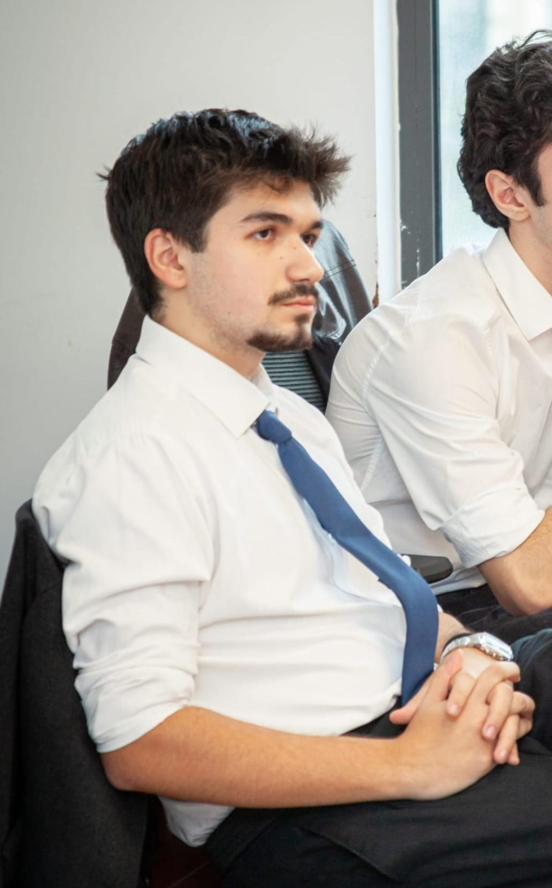
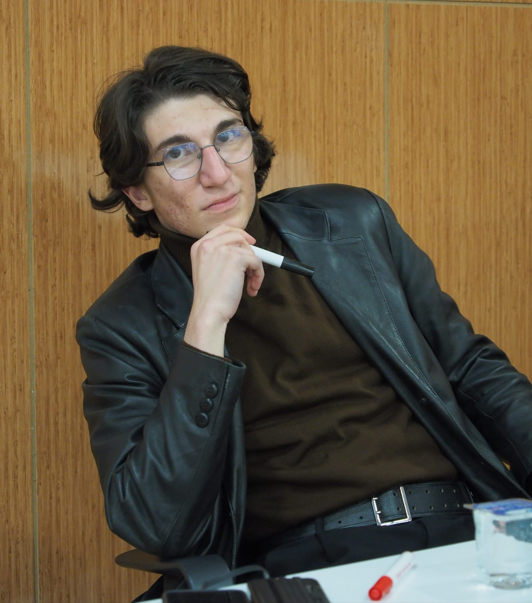

Komiteler
9 farklı komitede, alanında uzman moderatörler eşliğinde ulusal ve küresel meseleleri tartışın.
HUKUK KOMİTESİ
Hukuk sistemleri, adalet mekanizmaları ve hukuk felsefesi üzerine tartışmalar. Ulusal ve uluslararası hukuk normlarının analizi.
Moderatörler:
Duru Bakan
Moderatör
Deniz Selçuk
Moderatör
Tartışma Konuları:
- Dijital haklar ve gizlilik
- Uluslararası hukuk ve egemenlik
- Yapay zeka ve hukuki sorumluluk
- Anayasal değişimler
İNSAN HAKLARI KOMİTESİ
İnsan hakları evrensel beyannamesi, temel hak ve özgürlükler üzerine derinlemesine tartışmalar. Küresel insan hakları standartları.
Moderatörler:
Melek Koç
Moderatör
Nilüfer Eda Şentürk
Moderatör
Tartışma Konuları:
- Kadın hakları ve toplumsal cinsiyet eşitliği
- Mülteci hakları ve göç politikaları
- İfade özgürlüğü ve sansür
- Çocuk hakları ve koruma politikaları
TEOLOJİ KOMİTESİ
Dini inançlar, teolojik tartışmalar ve modern dini düşünce üzerine analizler. Farklı inanç sistemlerinin karşılaştırmalı incelenmesi.
Moderatörler:
Hamza Zile
Moderatör
Umut Erdoğan
Moderatör
Tartışma Konuları:
- Din ve modernizm
- Teolojik ekoller
- Dini radikalizm ve çözüm yolları
- İnanç özgürlüğü
PSİKOLOJİ KOMİTESİ
İnsan zihni, davranışları ve toplumsal etkileri üzerine derinlemesine tartışmalar. Modern psikoloji teorileri ve uygulamaları.
Moderatörler:
Giray Koralay
Moderatör
Derya Al
Moderatör
Tartışma Konuları:
- Sosyal medya ve ruh sağlığı
- Nörodiversite ve nöroetik
- Travma ve iyileşme süreçleri
- Yapay zeka ve psikoloji
FELSEFE KOMİTESİ
Varlık, bilgi ve değerler üzerine felsefi sorgulamalar. Temel felsefi akımlar ve modern düşünce.
Moderatörler:
Emrullah Yahya Türk
Moderatör
Meleksima Mutlu
Moderatör
Sena Babalıoğlu
Moderatör
Tartışma Konuları:
- Bilgi felsefesi ve epistemoloji
- Etik ve ahlak felsefesi
- Varlık felsefesi ve ontoloji
- Modern felsefi akımlar
ULUSLARARASI İLİŞKİLER KOMİTESİ
Global politikalar ve uluslararası diploması üzerine analizler. Dünya düzeni ve güç dengeleri.
Moderatörler:

Eyüp Çınar
Moderatör
Nilay Melis Gökçek
Moderatör
Tartışma Konuları:
- Çok kutuplu dünya düzeni
- İklim diplomasisi
- Bölgesel güç dengeleri
- Uluslararası güvenlik
DİSTOPYA KOMİTESİ
Gelecek projeksiyonları ve distopik senaryolar üzerine tartışmalar. Teknoloji ve toplum ilişkileri.
Moderatörler:

Ahmet Tarık Kabasakal
Moderatör
Tartışma Konuları:
- Yapay zeka ve insanlık
- Dijital totalitarizm
- İklim değişimi ve distopik gelecek
- Genetik mühendislik etiği
KRİMİNOLOJİ KOMİTESİ
Suç olayları ve kriminoloji teorileri üzerine bilimsel tartışmalar. Modern suç analiz yöntemleri.
Moderatörler:
Rukiye Demirel
Moderatör
Asya Ertuğrul
Moderatör
Tartışma Konuları:
- Siber suçlar ve dijital güvenlik
- Organize suçlar ve terörizm
- Modern kriminoloji teorileri
- Adli psikoloji ve profil
SOSYOLOJİ KOMİTESİ
Toplumun yapısı, değişim süreçleri ve sosyal dinamikler üzerine analizler. Sosyolojik teori ile pratik uygulamaların buluştuğu alan.
Moderatörler:
Elif Çayır
Moderatör
Sude Kemer
Moderatör
Melek Aksoy
Moderatör
Tartışma Konuları:
- Sosyal medya ve toplumsal ilişkiler
- Küreselleşme ve kültürel kimlik
- Toplumsal cinsiyet rolleri
- Modern sosyolojik teoriler
Komite Seçimi
Başvuru yaparken ilgilendiğiniz komiteyi seçebilirsiniz. Her komite alanında uzman moderatörler eşliğinde tartışmalar düzenlenecektir.